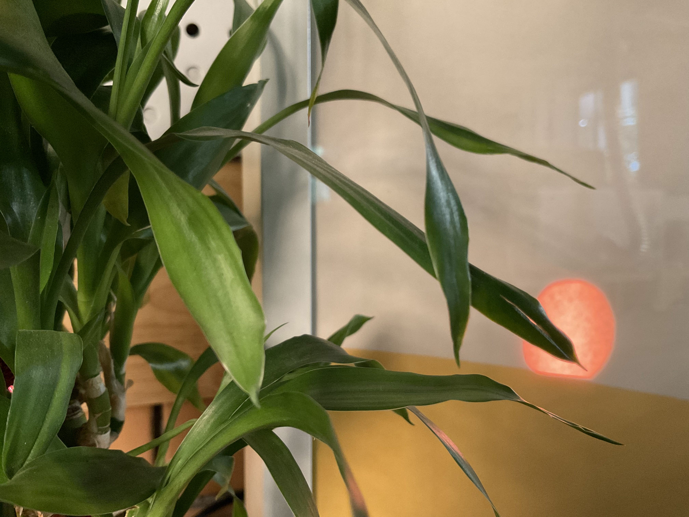
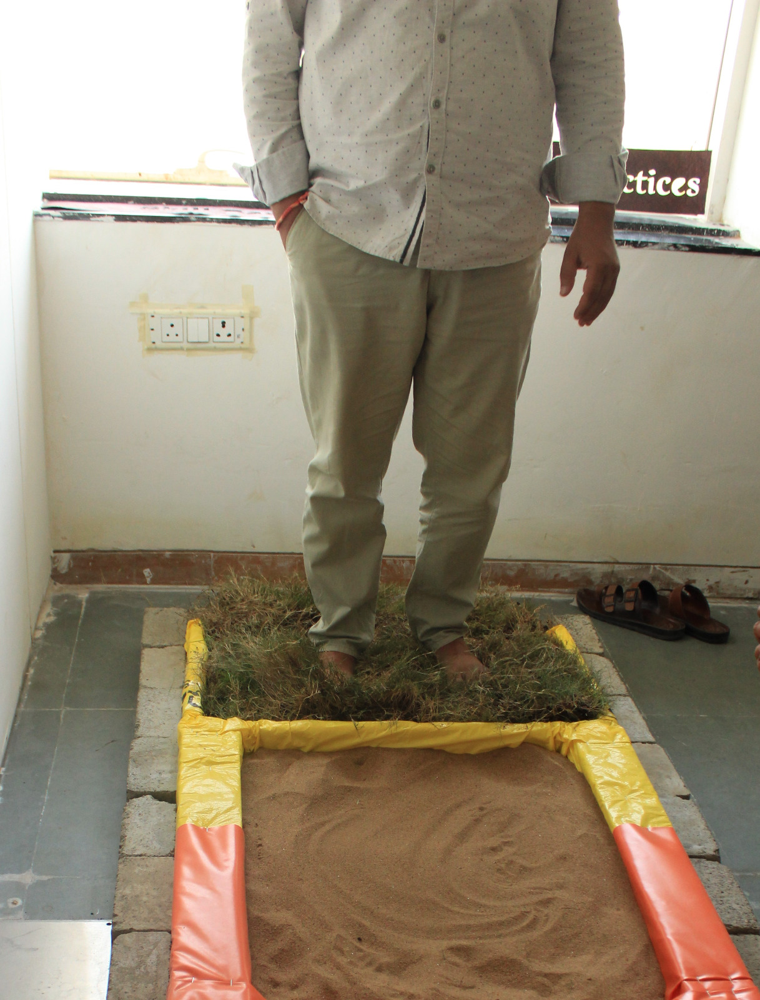

Work
A collection of projects spanning interaction design, speculative design, tangible interaction, and research. Projects under NDA can be discussed in person.
Platform for NLU-based Textual Analysis & Summarization
Stride.io · 2023
Making machine-generated text analysis legible to non-technical users. Designed the full product experience for an IPA platform — from IA and user flows through to hi-fidelity prototype, UI kit, and developer handoff.
View Project →
Designing for Virtual Continuum
Holosuit Pvt Ltd · 2023
Designed immersive learning objects across web, AR, and VR for an agricultural university. Built the internal framework that made the process repeatable — reducing cycle time for every subsequent module.
View Project →
Rethinking Time: The Future of Timekeeping Devices
Titan Company Ltd · 2022
Extended experimental research engagement with Titan — 20+ concepts developed across six domain areas, 4 physically prototyped. All IP with Titan Company. Full scope available on request.
View Project →
Kairos: Contemplating Our Relationship with Time
NID thesis project — a sun-arc timekeeping artefact built around natural rhythms rather than numerical precision. The research direction that led to the Titan Company engagement.
View Project →
Exploring Boundaries: Alternatives and Futures for the Indian Sub-Continent
Avantika University · 2024
Designed and co-facilitated a discursive design workshop engaging students in speculative futures for the Indian Sub-Continent — using designed artefacts as tools for critical conversation, not just expression.
View Project →
From Known to Unknown: Workshop at National Institute of Design
National Institute of Design · 2024
A two-week open elective at NID built around Exformation as a design methodology — asking students to rediscover water by stripping away what they thought they knew.
View Project →